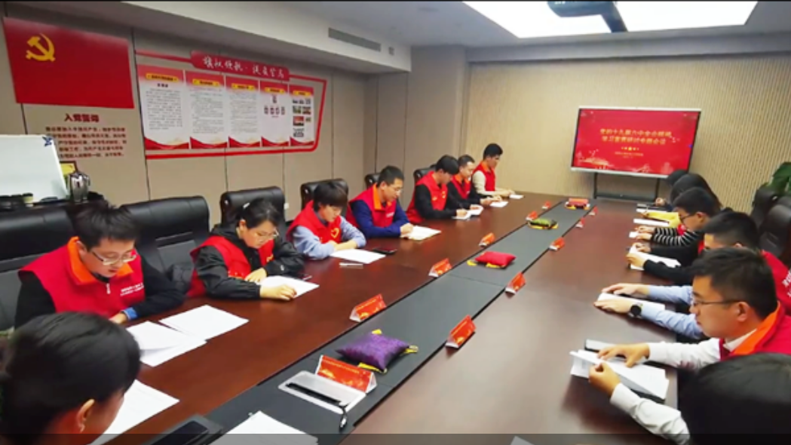

登录/注册
首页
主题教育
党的历史
先进典例
党章党规
中共中央关于党的百年奋斗重大成就和历史经验的决议

中央宣讲团到团中央机关宣讲党的十九届六中全会精神
12月14日下午，学习贯彻党的十九届六中全会精神中央宣讲团到团中央机关围绕“深入学习贯彻党的十九届六中全会精神”作专题报告。
贺军科在中央团校宣讲党的十九届六中全会精神
12月6日下午，共青团中央书记处第一书记、中央团校校长贺军科向师生宣讲党的十九届六中全会精神。
重温百年党史 担当时代重任
回顾党百年奋斗的壮阔历程，铭记重大成就，承先辈志、铸爱国魂
"不忘初心、牢记使命"主题教育专题
8月2日上午，广东青少年大数据及新媒体中心党支部组织支部党员同志学习习近平总书记在深化党和国家机构改革总结会议上的重要讲话；习近平总书记致信祝贺中国志愿服务联合会第二届会员代表大会召开的重要指示精神；传达了团省委近期主题教育需要关注的几个问题。 会上，党员们结合实际工作，畅所欲言。
会议认为，在做好直接联系服务省内广大青少年的服务平台运营、网络传播党的声音方面，要有更大作为。要站在不断增强党的政治领导力、思想引领力、群众组织力、社会号召力方面，让广大青少年更有获得感。
青年大学习
习近平总书记在庆祝中国共产党成立100周年大会上深刻指出：“走自己的路，是党的全部理论和实践立足点，更是党百年奋斗得出的历史结论。” “我们坚持和发展中国特色社会主义，推动物质文明、政治文明、精神文明、社会文明、生态文明协调发展，创造了中国式现代化新道路，创造了人类文明新形态。” 本期“青年大学习”网上主题团课“坚持和发展中国特色社会主义”，带领广大团员青年一起了解相关内容。